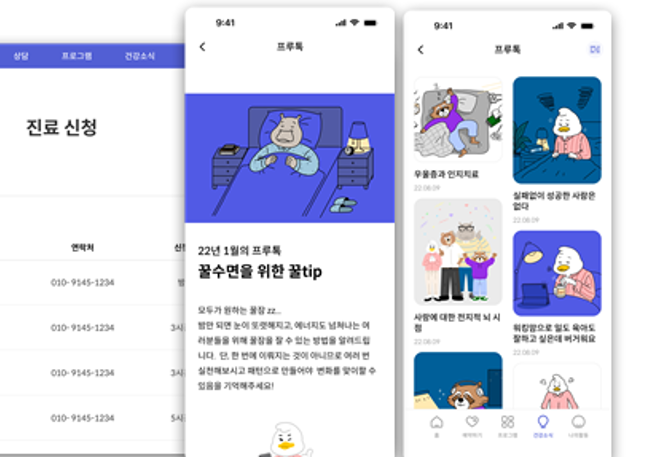
Fruto - UNIST Life Coaching Platform
2022.04 - Present
Developed and managed a multi-domain help-seeking platform integrating CBT interventions, mental health resources, and user experience research for university students.
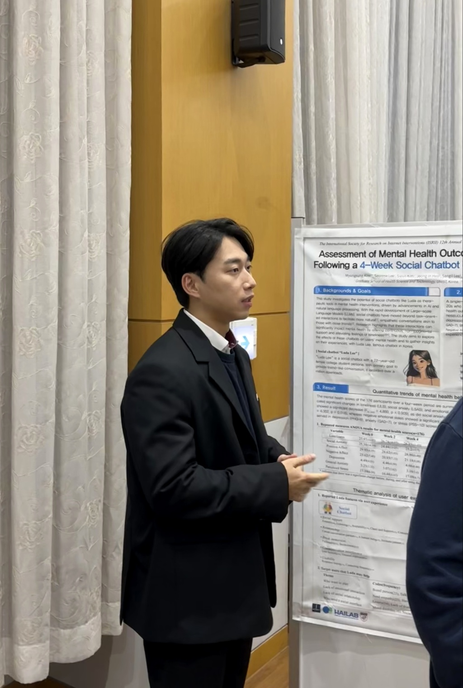
UNIST Graduate School of Health Science and Technology • HAI Lab
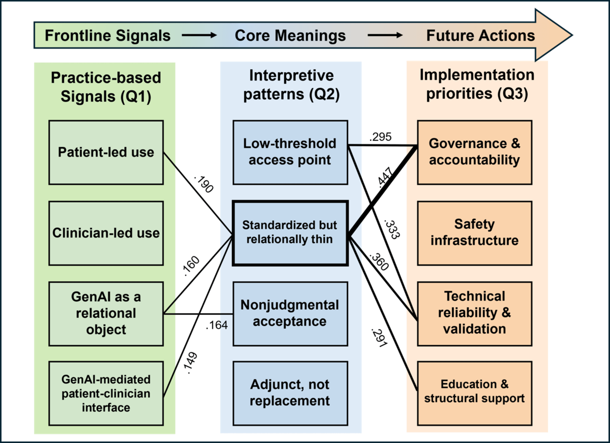
Qualitative study of how Korean psychiatrists describe, interpret, and prioritize generative AI in clinical practice, revealing nuanced risk–benefit perceptions and concrete implementation priorities.
Journal of Medical Internet Research, 2026 · 28, e96556
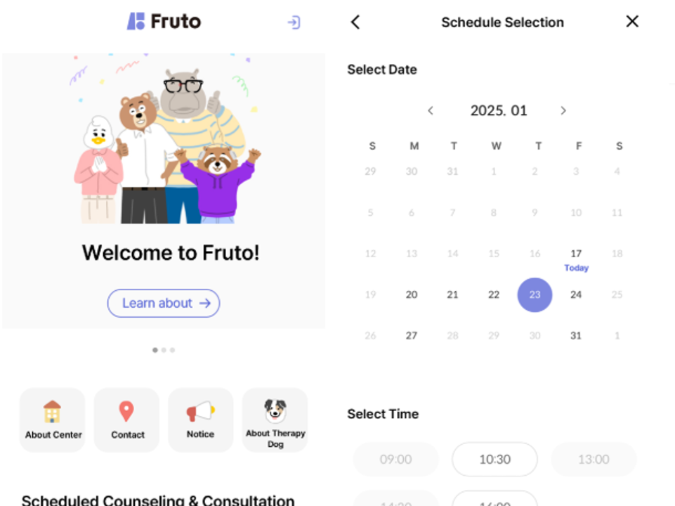
Sequential mixed methods study evaluating “Fruto,” a campus-integrated, multi-domain platform, showing that integrated features and user-centered design can improve help-seeking attitudes and counseling expectations.
Journal of Medical Internet Research, 2026 · 28, e78930
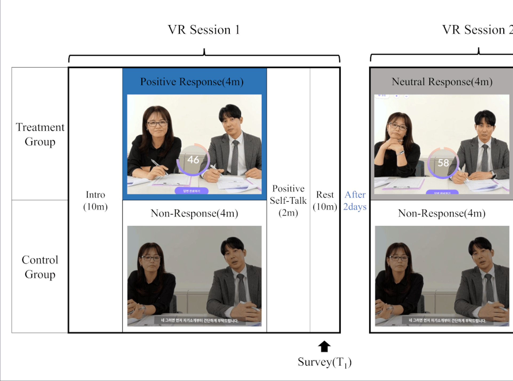
Registered randomized controlled trial protocol testing whether VR exposure therapy with graded interviewer reactions reduces public speaking anxiety more than standard automated VR exposure.
Trials, 2026 · 27(1), 485
Combines survey and interview data to show how job context and resistance moderate counselors’ acceptance of VR exposure therapy, revealing implementation barriers.
Journal of Medical Internet Research, 2025 · 27, e81803
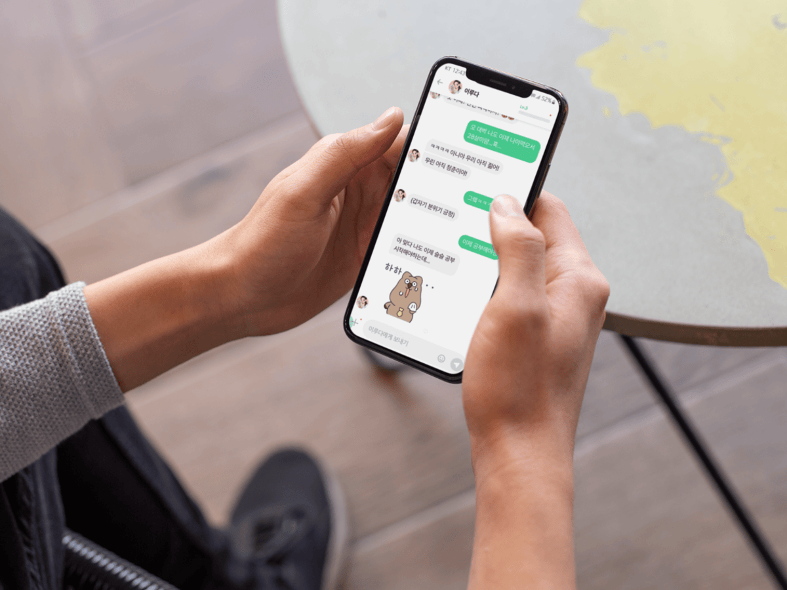
Four-week quasi-experimental study showing that social chatbots can reduce loneliness and social anxiety in university students through daily conversational engagement.
Journal of Medical Internet Research, 2025 · 27, e65589
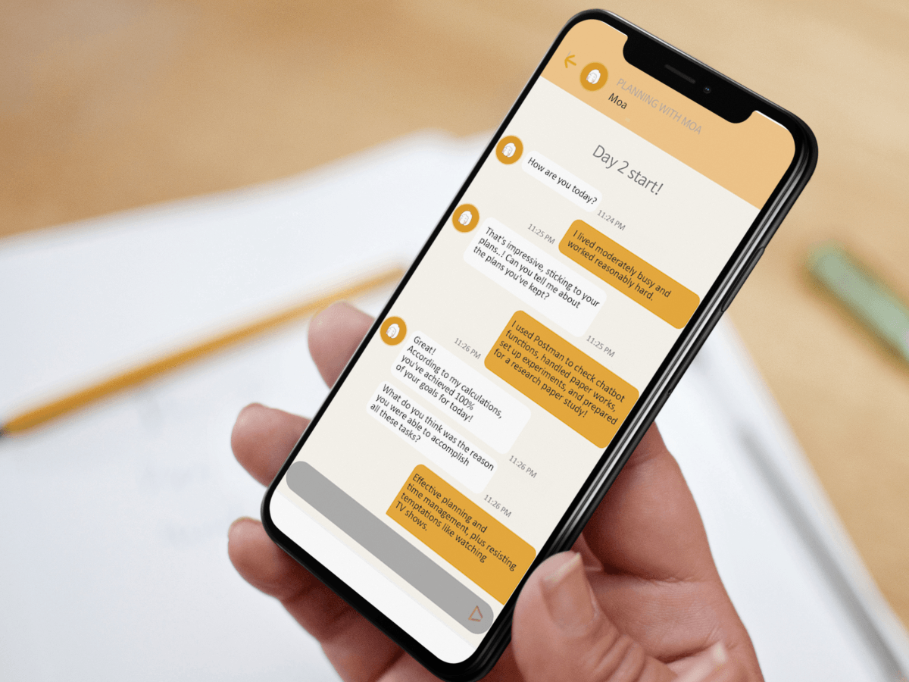
Pilot randomized controlled trial of a mobile CBT app augmented with a semigenerative chatbot for procrastination, showing feasibility and preliminary effectiveness in behavioral change.
JMIR mHealth and uHealth, 2025 · 13, e53133
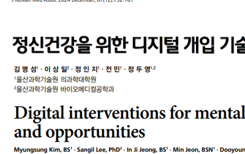
Journal of the Korean Medical Association, 2024 · 67(12), 752–761
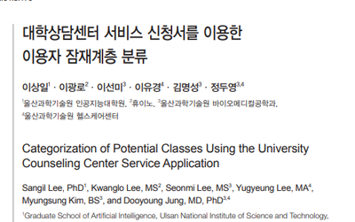
Journal of the Korean Neuropsychiatric Association, 2022 · 61(3), 170–177
Why Only in the Lab? Understanding Counselors’ Technology Acceptance Intentions on Virtual Reality Exposure Therapy: A Mixed Methods Study ↗
CHI Conference on Human Factors in Computing Systems (CHI EA ’25)
Understanding University Students’ Experiences on the Multi-Domain Help-Seeking Platform “Fruto”: A Vignettes Study ↗
CHI Conference on Human Factors in Computing Systems (CHI EA ’25)
3D Sketching for Multi-Pose Products: An Interactive Showcase
ACM SIGGRAPH 2020 Labs
A Mobility Evaluation of Tilt Panning and Offset Sensing Smart Watch Input
Proceedings of the 5th ACM Workshop on Wearable Systems and Applications (WearSys ’19)

2022.04 - Present
Developed and managed a multi-domain help-seeking platform integrating CBT interventions, mental health resources, and user experience research for university students.
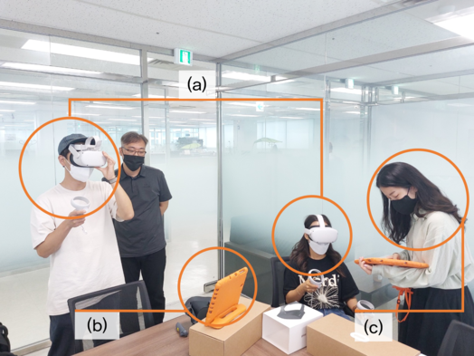
2022.04 - Present
Led user research, literature review, and experimental design for VR-based exposure therapy targeting public speaking anxiety and social anxiety disorders.
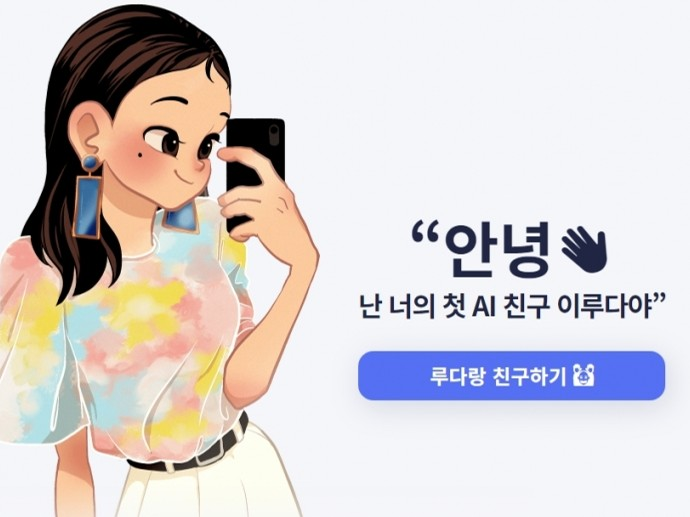
2023.03 - Present
Designed and analyzed a quantitative evaluation of social chatbots' effects on loneliness, social anxiety, and well-being in university students.
"Clinicians' Experiences, Type-Specific Risk Perceptions, and Implementation Priorities for AI Chatbots in Mental Health Care: A Mixed-Methods Survey of Psychiatrists in South Korea"
ISRII 2026 · Newcastle, Australia
"Exploring the Psychological Well-Being Effects of Social Chatbots and External Factors Influencing Their Interactions"
ISRII (accepted, presented by advisor due to funding)
"Why Only in the Lab? Understanding Counselors' Technology Acceptance Intentions on Virtual Reality Exposure Therapy: A Mixed Methods Study"
CHI 2025
"Understanding University Students' Experiences on Multi-domain Help Seeking Platform 'Fruto': Vignettes Study"
CHI 2025
"Assessment of Mental Health Outcomes and User Feedback Following a 4-Week Social Chatbot Use by University Students"
ISRII 2024
"Interview & Semi-role playing observation of Counseling Center for Introduction of Digital Mental Care Services into the Counseling Process"
WCCBT 2023
"Mobile Cognitive Therapy with Generative Disputation using Large-scale Language Model"
WCCBT 2023
"Development of practical chatbot system for contents recommendation and data collection simultaneously: the case of UNIST healthcare center"
ISRII 2022
Mental health startup translating campus research into deployable products · Republic of Korea